Основной целью работы является развёртывание в системе виртуализации
(например, в VirtualBox) mininet, знакомство с основными командами для
рабо- ты с Mininet через командную строку и через графический
интерфейс.
Теоретическое введение
Mininet (http://mininet.org/) — это виртуальная среда, которая
позволяет разрабатывать и тестировать сетевые инструменты и протоколы. В
сетях Mininet работают реальные сетевые приложения Unix/Linux, а также
реальное ядро Linux и сетевой стек.
Выполнение лабораторной
работы
1. Настройка и первый
запуск VM Mininet.
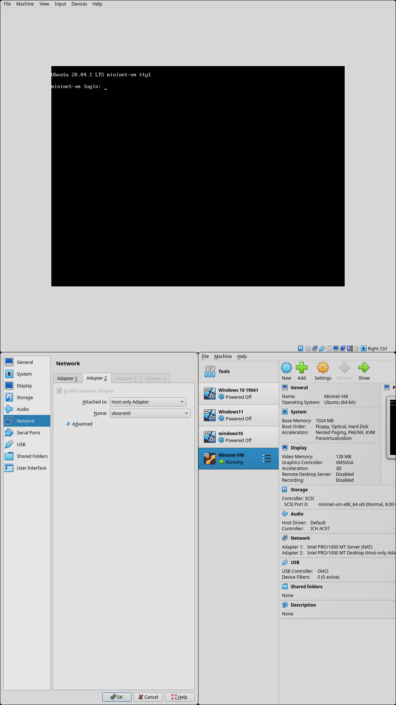
Настройка и первый запуск VM
Mininet
2. Подключение к VM по ssh
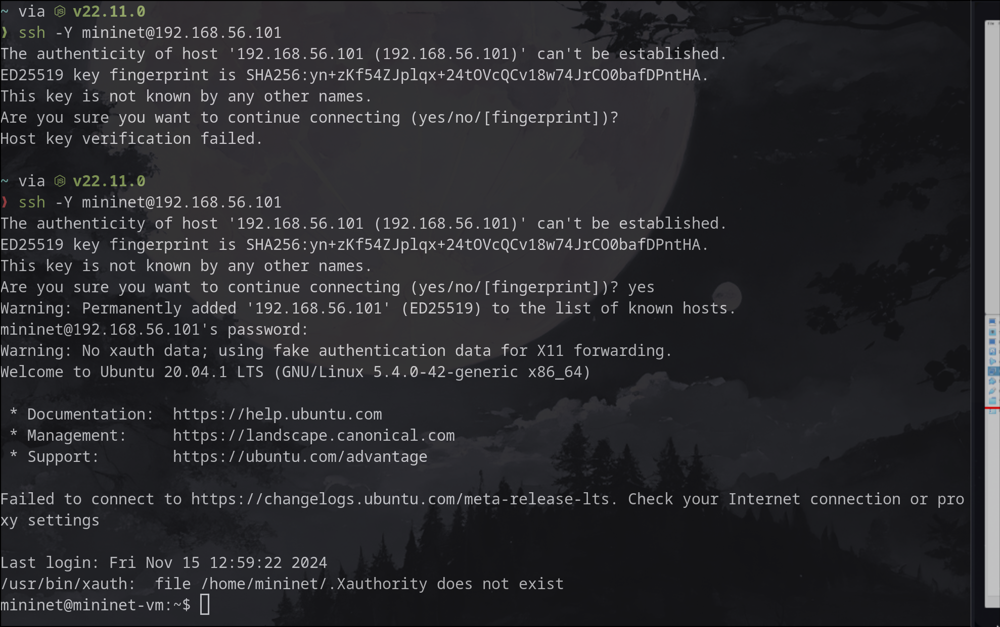
Подключение к VM по ssh
3. Настройка сети.
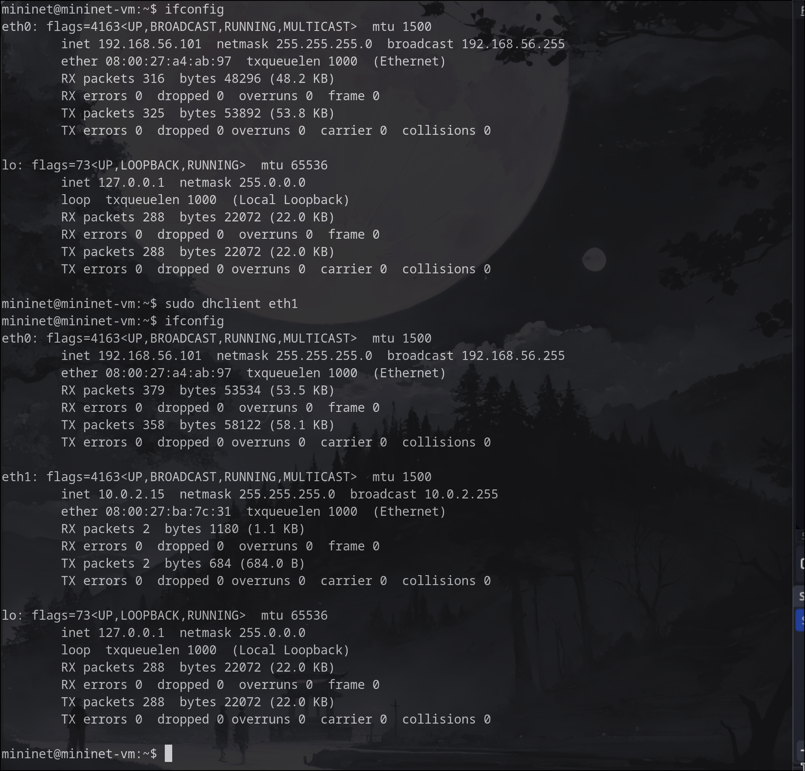
Настройка сети
4. Настройка 01-netcfg.yaml
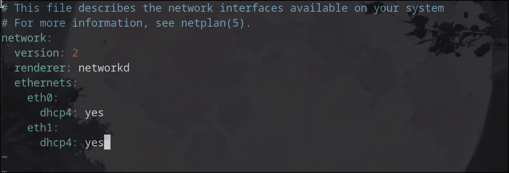
Настройка 01-netcfg.yaml
5. Обновление Mininet
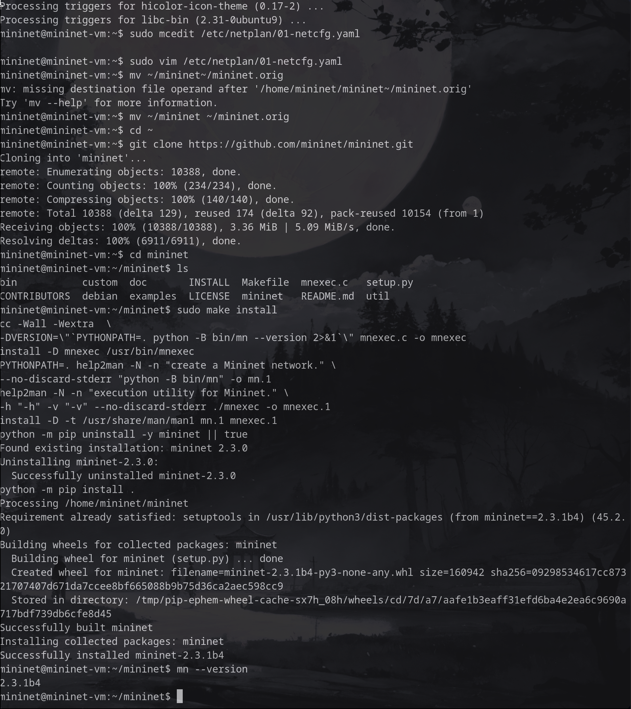
Обновление Mininet
6. Настройка xterm
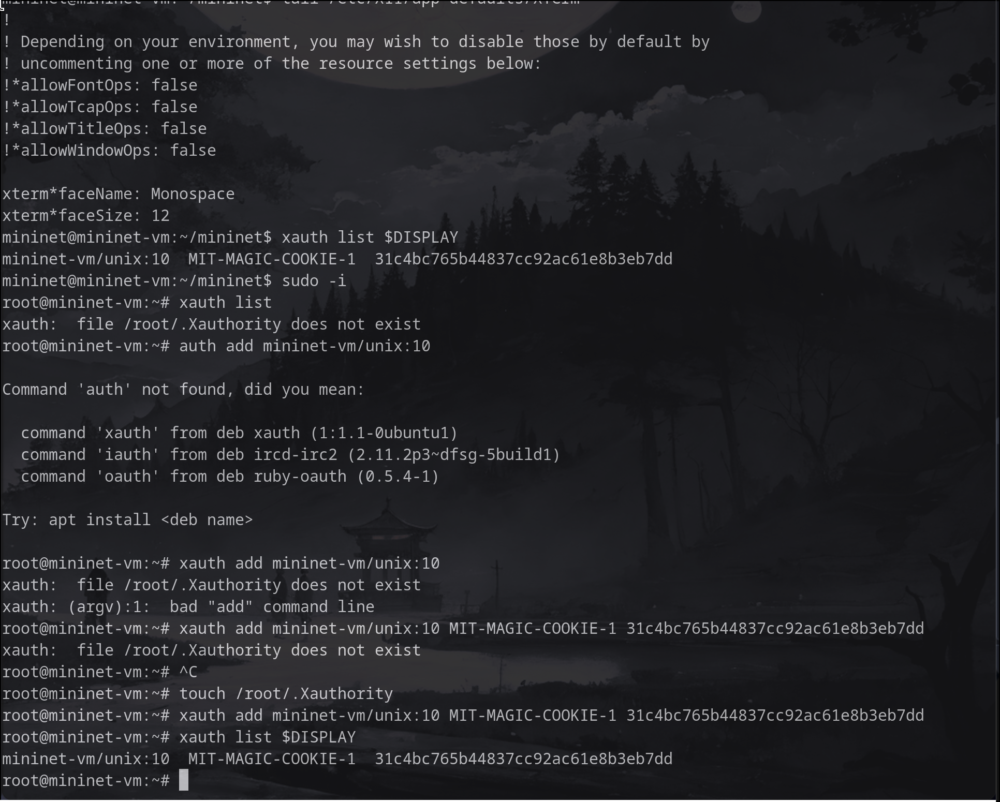
Настройка xterm
7. Основы работы c Mininet
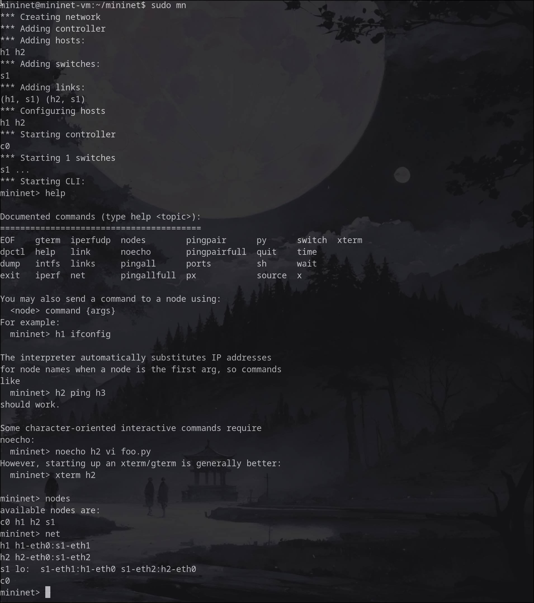
Основы работы c Mininet
8. Проверка связности
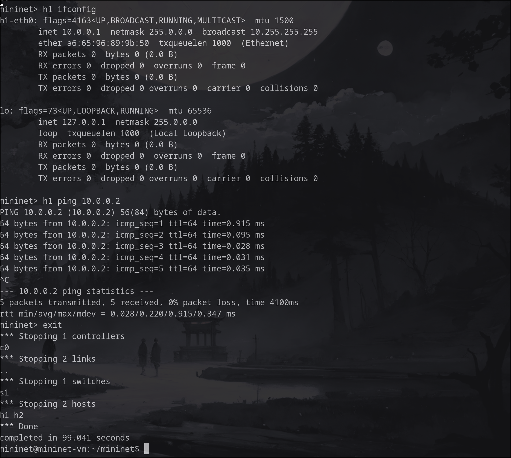
Проверка связности
9. Топология сети
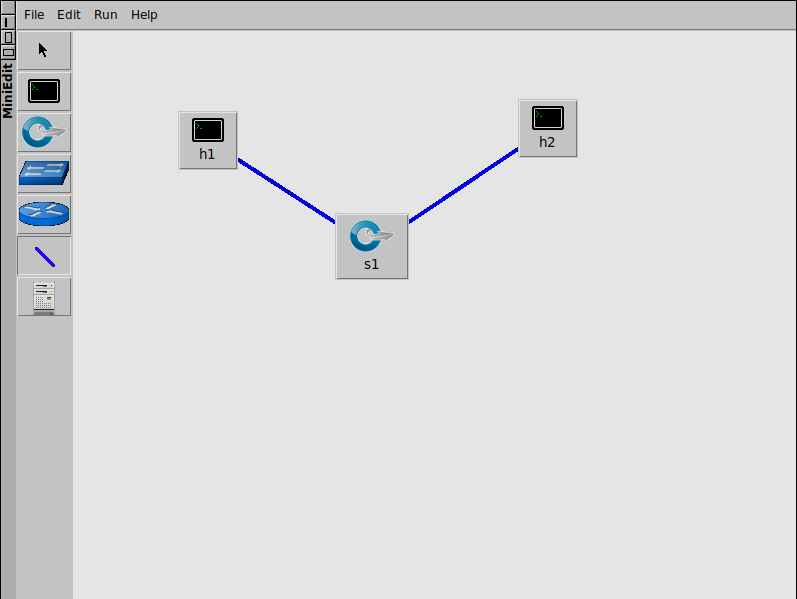
Топология сети
10. ifconfig на хостах
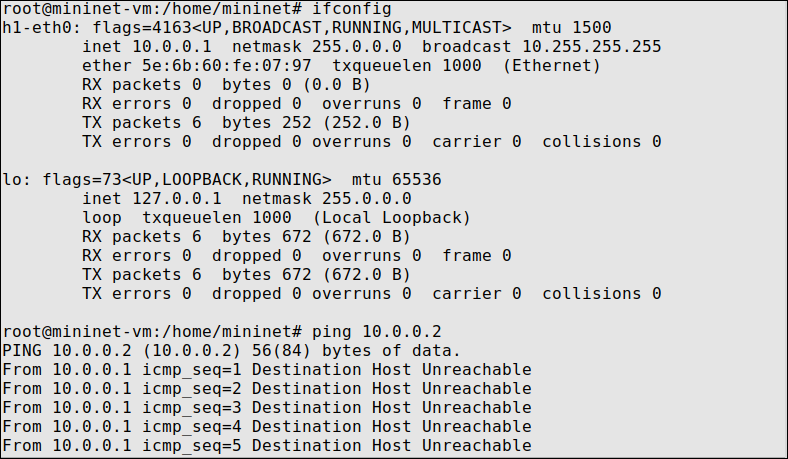
ifconfig на h1
11.
ifconfig на h1 после автоматического назначения айпи адресов
ifconfig на h1
12. Сохранение работы
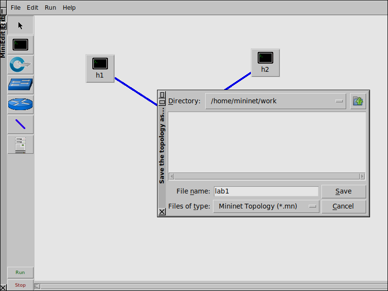
Сохранение работы
Выводы
Я успешно развернул mininet в среде виртуализации VirtualBox и
познакомился с основными командами работы с Mininet через командную
оболочку и графический интерфейс.